Conhecimento para uma vida inteira.
Acesso vitalício às aulas e ao conteúdo do curso. Estude e revise quantas vezes quiser.
Conheça a Palavra com profundidade. Estude as doutrinas fundamentais da fé cristã com uma formação bíblica e pentecostal, pensada para quem está começando.
Pix ou cartão de crédito em até 12x · Acesso vitalício
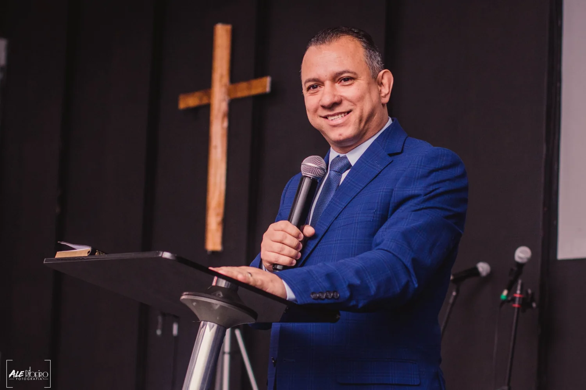
O Curso Básico em Teologia é o primeiro passo para compreender as Escrituras de maneira organizada, fundamentada e bíblica.
São 12 matérias de teologia sistemática, ministradas com fundamento pentecostal, para construir conhecimento que acompanha sua caminhada cristã.
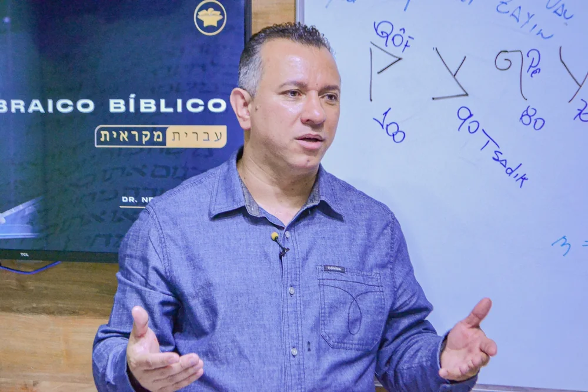
Tudo o que você precisa para estudar com autonomia, profundidade e o suporte da universidade.
Acesso vitalício às aulas e ao conteúdo do curso. Estude e revise quantas vezes quiser.
Organizadas em 12 matérias, disponíveis no seu ritmo.
Conteúdo de todas as matérias dentro da plataforma.
Suporte direto com a universidade pelo WhatsApp e acesso ao professor.
Certificado de conclusão do curso livre de Teologia.
Baixe as aulas no aplicativo para assistir offline e acompanhe o áudio com a tela bloqueada.
Aplicativo disponível na Play Store e App Store. Acesse também pelo notebook, PC e Smart TV compatível.
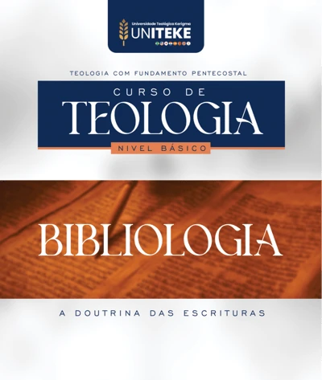
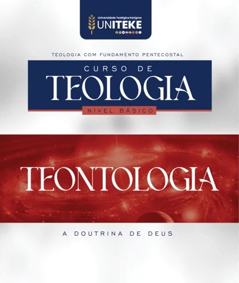
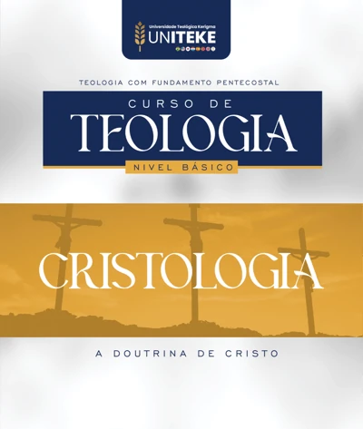
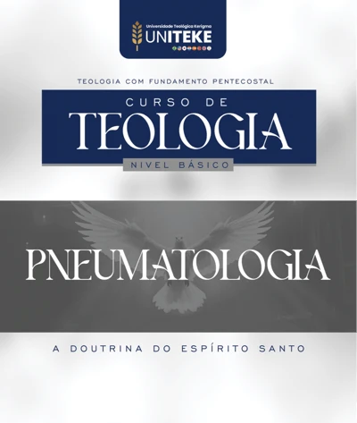
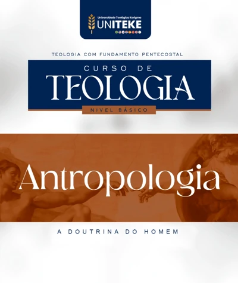
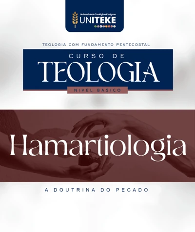
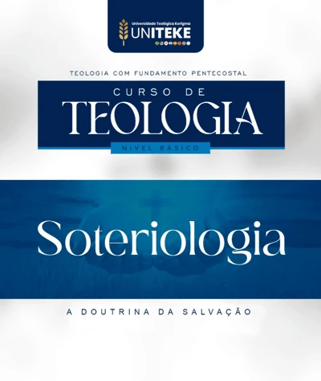
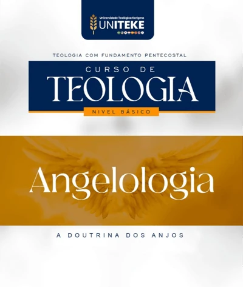
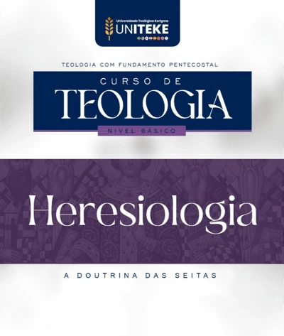
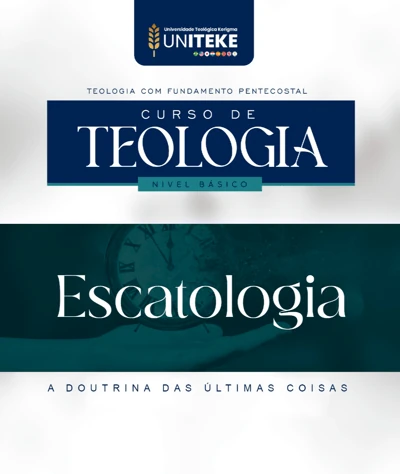
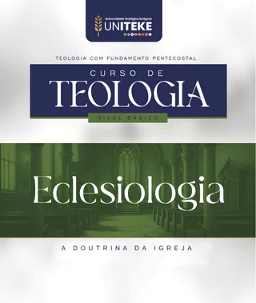
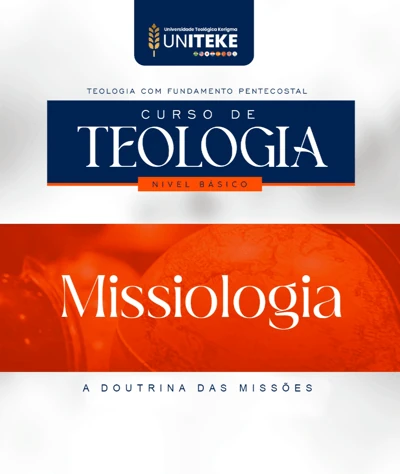
Arraste para conhecer todas as matérias do curso.
01 — 12Uma experiência de estudo flexível, com as aulas e o material didático organizados em um único ambiente.
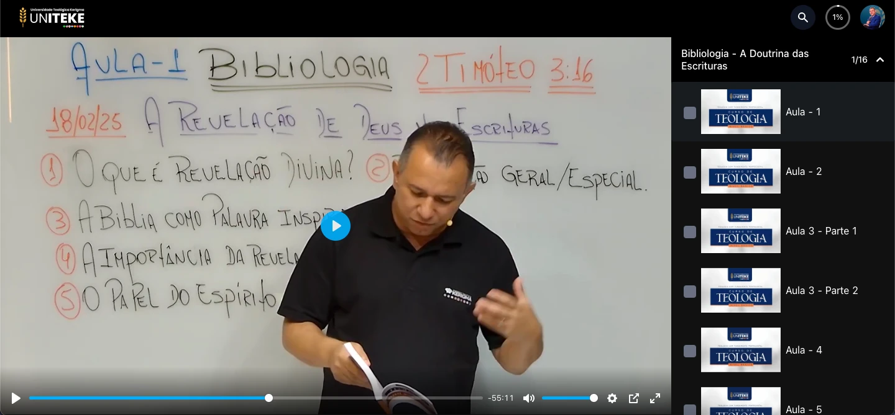
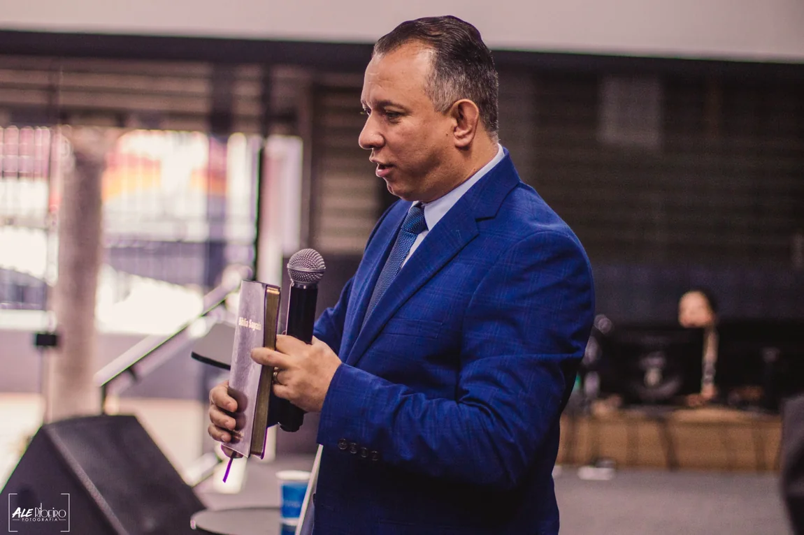
Ministro do Evangelho, educador teológico, escritor e palestrante. Sua dedicação ao ensino da Palavra de Deus ultrapassa fronteiras, formando estudantes, pastores e líderes cristãos.
Diretor do ITEKE, SETEK e UNITEKE, reúne experiência ministerial e compromisso com uma formação bíblica de profundidade.
Conheça registros de nossas cerimônias e de alunos que fizeram parte da trajetória da Universidade Teológica Kerigma.
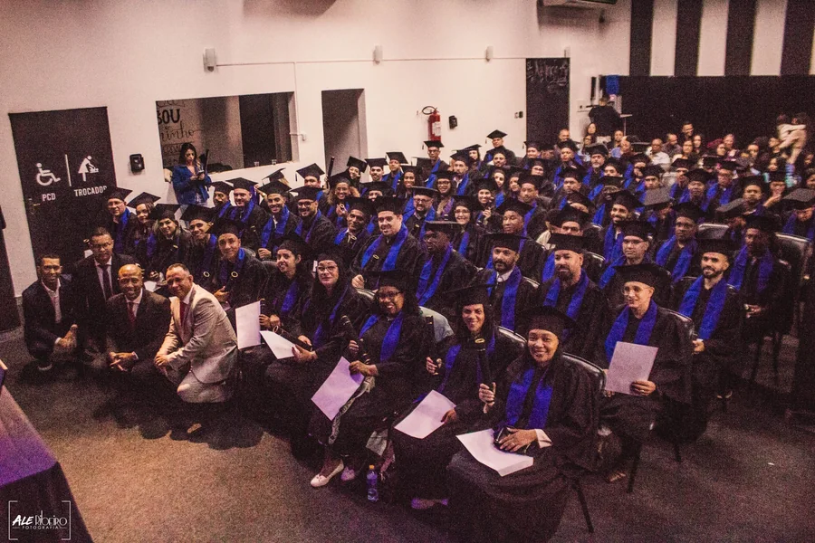
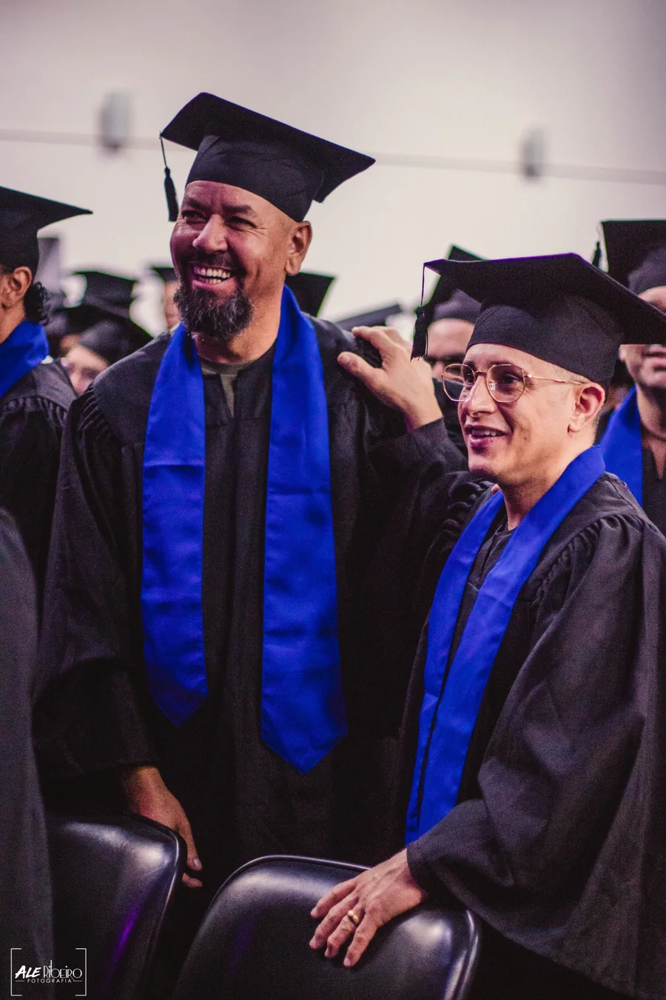
Registros fotográficos das formaturas da instituição.
Ao concluir o Curso Básico em Teologia, você recebe o certificado de conclusão com carga horária de 540 horas, já incluso no valor da formação.
Curso livre de formação teológica. O certificado não equivale a um diploma de graduação.
Uma oportunidade para investir no conhecimento das Escrituras com acesso vitalício ao Curso Básico em Teologia Bíblica.
Pagamento via Pix ou cartão em até 12x.
Confira as condições de parcelamento no checkout.
Ainda tem alguma dúvida sobre sua formação? Nossa equipe está à disposição.
Falar com a universidade ↗O Curso Básico em Teologia é 100% online. Você pode estudar no seu próprio ritmo, de onde estiver.
O acesso ao conteúdo é vitalício. Você pode retornar às aulas e revisar as matérias sempre que precisar.
Sim. Ao concluir o curso, você recebe o certificado de conclusão de curso livre, com carga horária de 540 horas.
O valor promocional é de R$ 300,00. O pagamento pode ser feito via Pix ou cartão de crédito em até 12 vezes, conforme as condições exibidas no checkout.
Sim! Ele foi desenvolvido especificamente para quem está começando seus estudos teológicos.
Sim! As 260 aulas estão gravadas e disponíveis na plataforma.
Sim. O material didático de todas as 12 matérias está disponível em PDF na plataforma.
Não. É um curso livre de formação teológica, com certificado de conclusão.